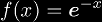
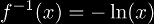

One of the first things people ask about anything is: What is it used for? Tetration is no different, but since its applications are few and far between, it is a difficult task to collect them all. As we learn more about tetration, we find that it has more and more applications, and that its place in pure mathematics may come into question very soon. This is because researchers are finding applications of tetration all the time. For example, these are a few applications listed here:
The infinite tetrate has many physical applications because it is topologically conjugate to the Lambert W-function. In other words, we can write an expression for the Lambert W-function in terms of the infinite tetrate as
and we can write an expression for the infinite tetrate in terms of the Lambert W-function as follows
where the second equations clearly indicate that there is a topological conjugacy between the two functions. The homeomorphism that forms the topological conjugacy between these two functions is  whose inverse is . For more information, see the section on topological conjugacy.
There are a large number of sequences that tetration (directly or indirectly) is the generating function for.
|
Copyright © 2010 Andrew Robbins ( |
|